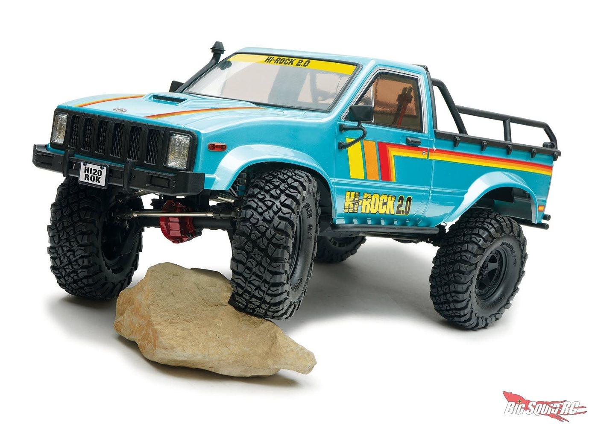

FTX обновили свой Outback Hi-Rock, теперь это версия 2.0 в масштабе 1:10

Первое, что бросается в глаза, это расцветка: голубой кузов с полосами в стиле 80-х. Смотрится как пикап из старого фильма, только на порталах
По технике тоже всё серьёзно: портальные мосты спереди и сзади, двухскоростная коробка с переключением с пульта, стальная рама и серво на 15 кг. Свет работает из коробки, аккумулятор и зарядка лежат в комплекте.
Поставки обещают в конце октября.
Цена: £329, это около $430 или примерно 37 000 ₽
Коротко о модели
| Бренд | FTX |
|---|---|
| Масштаб | 1:10 |
| Статус | Анонс, поставки с конца октября |
| Дата новости | 7 октября 2026 |
Характеристики FTX Outback Hi-Rock 2.0 RTR
- Двухскоростная коробка с переключением с пульта
- Портальные мосты спереди и сзади
- Усиленная стальная рама, металлические тяги 6 мм
- Серво Etronix 15 кг с металлическим редуктором
- Влагозащищённый регулятор Hobbywing WP1060
- Шины Fastrax Grappler
- Светодиодные фары, скрытые крепления кузова
- 6-канальная аппаратура, NiMH-аккумулятор Voltz и USB-зарядка в комплекте
Источник: Big Squid RC. Цены в рублях пересчитаны приблизительно и могут отличаться от цен в магазинах.